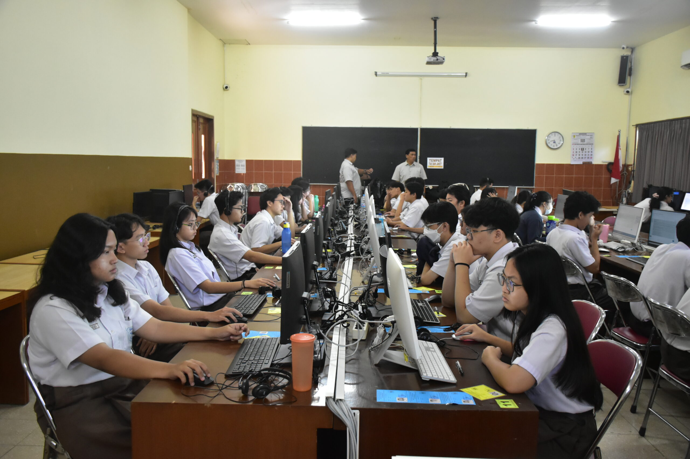
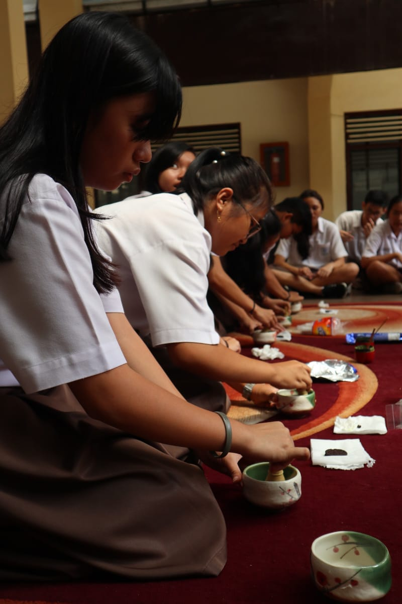
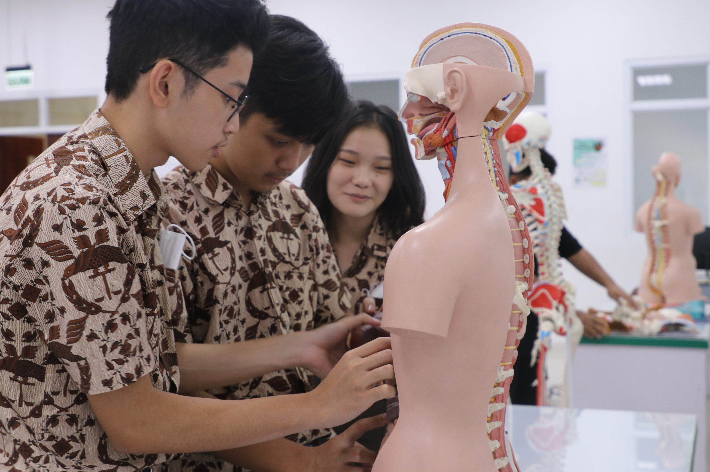
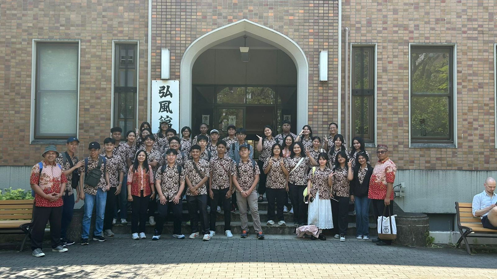
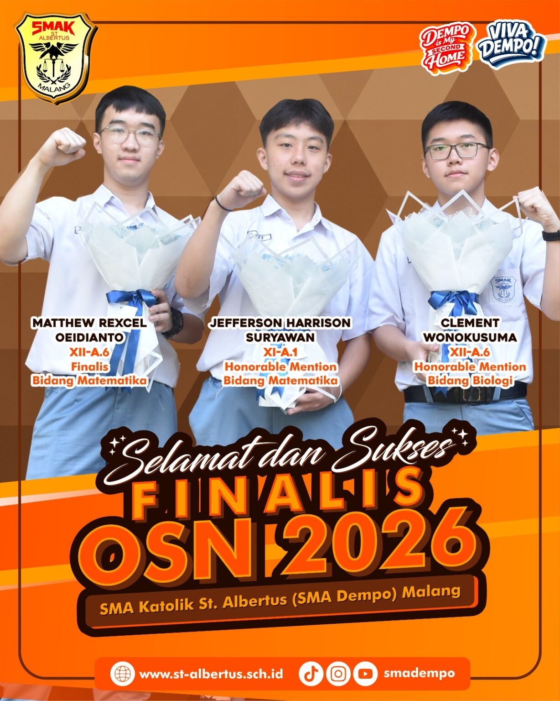
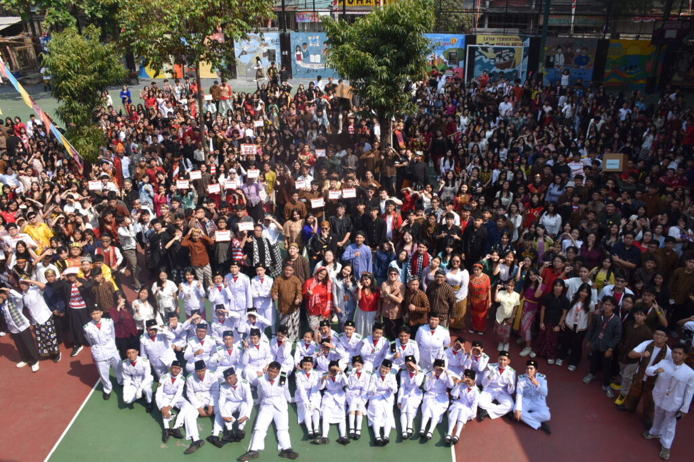
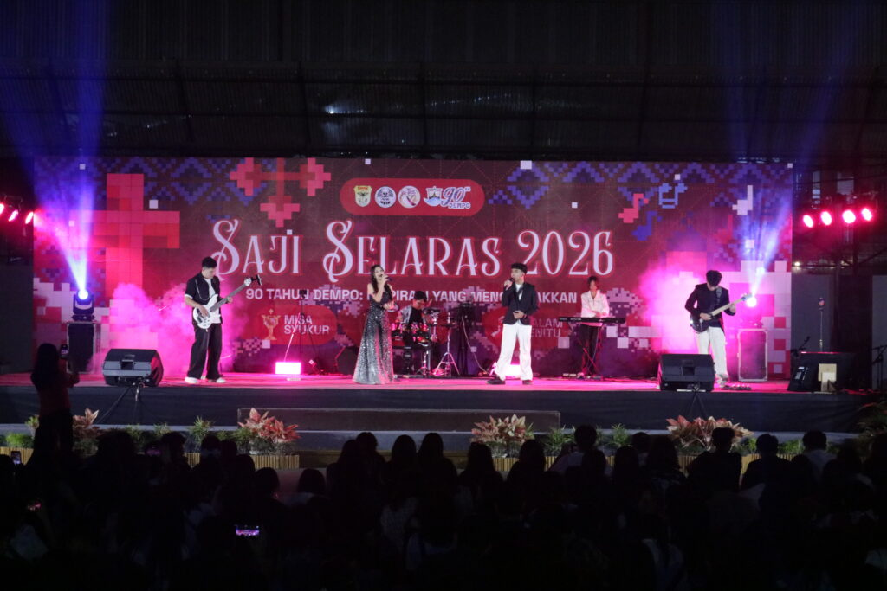
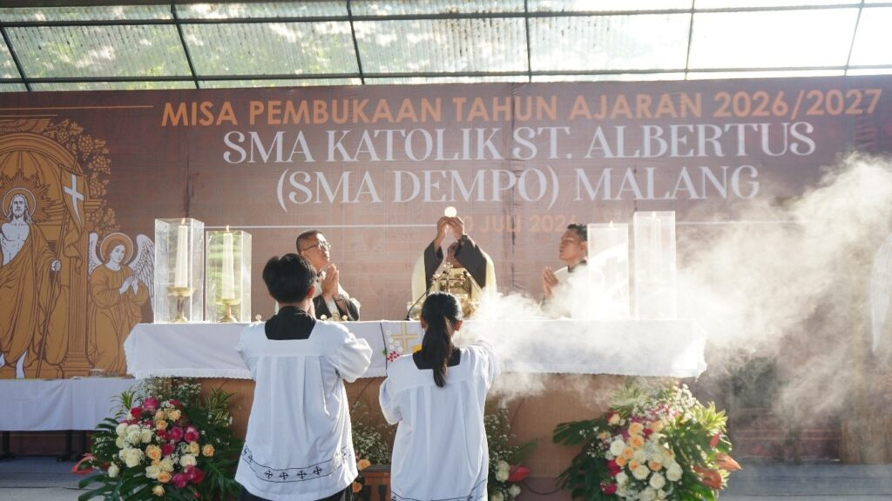
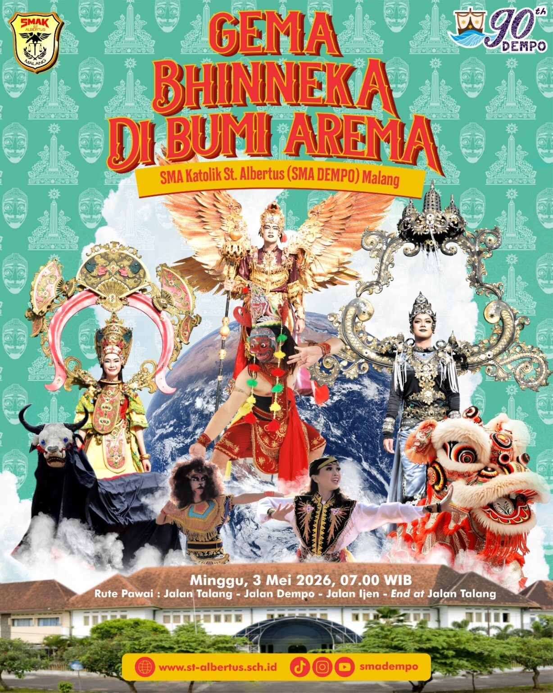
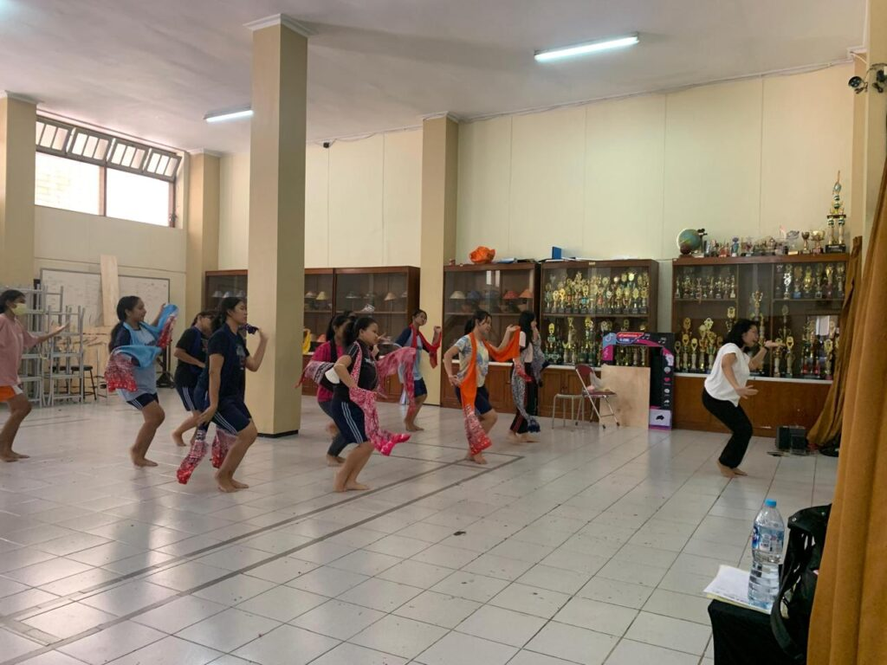

Selamat Datang di
SMAS Katolik St. Albertus Malang
Dempo is My Second Home
Mengapa Memilih SMA Dempo?
-

Menerapkan Kedisiplinan -
.jpg) Mempunyai Banyak Prestasi di Berbagai Bidang dan Tingkat
Mempunyai Banyak Prestasi di Berbagai Bidang dan Tingkat
-

Menyelenggarakan Banyak Ekstrakurikuler -

Fasilitas dan Sarana Prasarana Lengkap yang Menunjang Kegiatan Pembelajaran -

Dukungan Penuh terhadap Kegiatan Akademik dan Non-Akademik
Video Profile
Berita Terkini
-

Tiga Finalis OSN Disambut Hangat, Dempoers Diajak Berani Ikut LombaLydia Christi
Senin, 21 September 2026, SMA Katolik St. Albertus Malang menggelar penyambutan bagi...
-

Balutan Busana Adat Warnai Upacara HUT Ke-81 RI di SMA Katolik St. Albertus MalangLydia Christi
Lapangan SMA Katolik St. Albertus Malang (SMA DEMPO) berubah warna pada peringatan...
-

Saji Selaras 2026 Meriahkan Perayaan 90 Tahun SMA DempoLydia Christi
Malang, 1 Agustus 2026 – Setelah Perayaan Ekaristi dan kenduri syukur, rangkaian...
-

SMA DEMPO Awali Tahun Ajaran 2026/2027 dengan Misa Syukur dan Apresiasi bagi Siswa BerprestasiLydia Christi
Malang – Keluarga besar SMA Katolik St. Albertus (SMA DEMPO) Malang mengawali..
-

DEMPO Mozaik Nusantara: Gema Bhinneka di Bumi Arema Getarkan CFD IjenLydia Christi
Oleh: Dona Ashari Cristiani MALANG – Minggu pagi, 3 Mei 2026, menjadi...
-

Beyond the BellLydia Christi
Oleh : Andi Yulianto Di semua sekolah di seluruh dunia tentunya tidak...
Agenda Kegiatan
-
Edaran dan Jadwal Kegiatan Murid Baru Tahun Ajaran 2026/2027
By Rizky Kadhafi
Berikut ini adalah surat edaran terkait dengan revisi/perubahan jadwal dan informasi kegiatan murid baru tahun ajaran 2026/2027. Klik Disini
-
Undangan Orang Tua dan Panduan Murid Baru Tahun Ajaran 2026/2027
By Rizky Kadhafai
Berikut ini adalah surat undangan orang tua dan PPDB Tahun ajaran 2026/2027 Klik Disini
-
Edaran Jadwal April-Mei 2026
By Ajeng
Edaran Jadwal April-Mei 2026 Klik Disini
Lokasi Kami
Jl. Talang No.1, Oro-oro Dowo, Kec. Klojen, Kota Malang, 65112